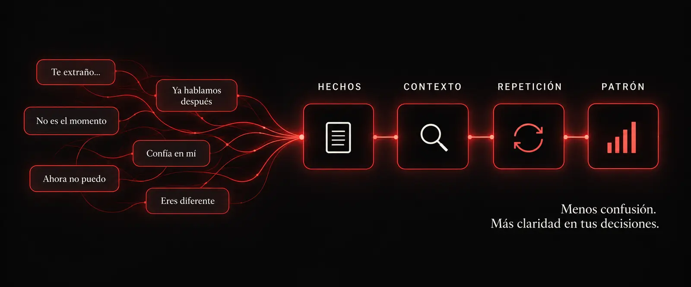

CASO 01
Cuatro años esperando que cambiara
La respuesta no estaba en su último mensaje, sino en todo lo que prometía y nunca sostenía.
Antes de interpretar otro mensaje
Deja de leer mensajes aislados. Aprende a reconocer lo que sus acciones repiten.
Acceso digital inmediato · Compra segura por Hotmart
Veinte señales para separar hechos de suposiciones y reconocer promesas que nunca se convierten en acciones.

No necesitas otra interpretación. Necesitas mirar el patrón completo.
Cuando ordenas los hechos y observas lo que se repite, la incertidumbre deja de controlar tus decisiones.
La respuesta no estaba en su último mensaje, sino en todo lo que prometía y nunca sostenía.
No era claridad ni compromiso: era un ciclo de atención intermitente que mantenía viva la esperanza.
Cuando separas las promesas de las acciones, dejas de justificar lo que nunca avanza.
Al ordenar los hechos, descubrió que su incertidumbre no había aparecido de la nada.
Situaciones ilustrativas basadas en los patrones analizados en The Signals. No representan testimonios individuales.
20 señales · Método WATCH
The Signals no intenta enseñarte a leer la mente de nadie. Te entrega un criterio práctico para observar lo que realmente está pasando antes de seguir invirtiendo emociones.
Pago procesado de forma segura por Hotmart · Acceso digital inmediato